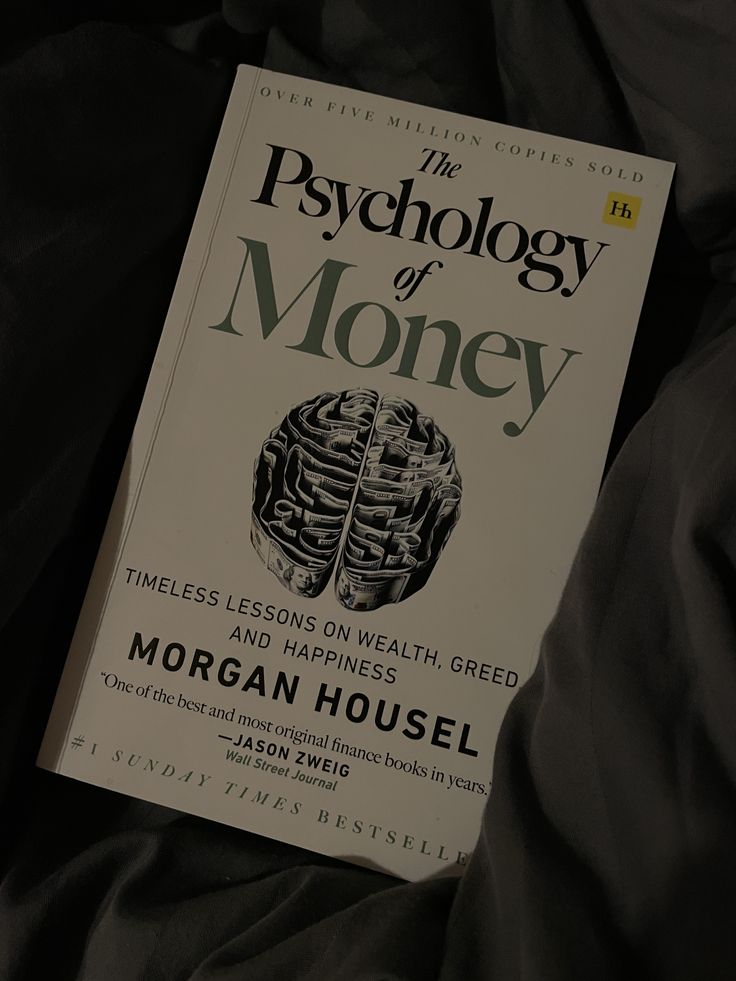

BOOK 1:- RICH DAD POOR DAD

DESCRIPTION
Rich Dad Poor Dad is a powerful personal finance book that contrasts two mindsets about money: one
focused
on security and the other on financial freedom. Through simple lessons, it teaches the importance of
assets,
investing, and financial education, inspiring readers to think differently and build
long-term wealth.
BOOK 3:- ATOMIC HABBITS

DESCRIPTION
Atomic Habits by James Clear explains how tiny daily habits create remarkable long-term results. It teaches the power of small improvements, identity-based change, and systems over goals. With clear strategies and real-life examples, the book helps you build good habits, break bad ones, and transform your life through consistent, simple actions.
BOOK 2:-HARD THINGS ABOUT HARD THINGS
DESCRIPTION
The Hard Thing About Hard Things by Ben Horowitz gives brutally honest lessons on building and running a startup. It explores the toughest decisions founders face—layoffs, leadership crises, competition, and chaos. With real-life stories and practical wisdom, it teaches how to survive, adapt, and lead when things get truly hard.
BOOK 4:-PHYSCOLOGY OF MONEY
DESCRIPTION
The Psychology of Money by Morgan Housel explores how emotions, behavior, and mindset shape the way people handle money. Through simple stories and timeless lessons, it shows that financial success is less about knowledge and more about habits, patience, and decision-making. It teaches how to think smarter and build lasting wealth.